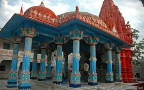

Brahma Temple – Pushkar

Location: Pushkar, Rajasthan, India
Deity: Lord Brahma (the Creator in Hindu Trinity)
Unique Fact: One of the very few Brahma temples in the world
Built By: Originally constructed in the 14th century
Architecture: Red shikhara (spire), marble & stone structure, silver turtle in sanctum
Sacred Pond: Located next to the holy Pushkar Lake
Major Festival: Kartika Purnima celebrated with a grand Pushkar fair
Legend: Linked to Brahma's yajna (sacrifice) and the creation of Pushkar town
Karni Mata Temple – Deshnoke
Location: Deshnoke, near Bikaner, Rajasthan
Deity: Karni Mata (incarnation of Goddess Durga)
Famous For: Over 25,000 sacred rats (kabbas)
Unique Belief: Rats are considered her devotees; white rats are especially sacred
Built: Early 20th century by Maharaja Ganga Singh of Bikaner
Architecture: Mughal-style marble façade, silver gates
Major Festival: Navratri with grand celebrations
Legend: Devotees of Karni Mata reincarnate as rats after death